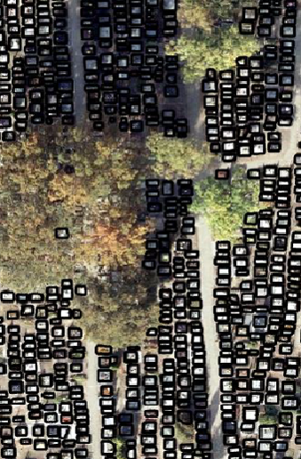

Python, ArcGIS Pro, QGIS
The project was developed as part of an engineering thesis which you can see in full in my repository on GitHub.
The main goal was to create a deep learning model for grave detection in cemeteries based on orthophotos. For this project ArcGIS Pro software was used because it has built-in AI models. The Mask-RCNN model was chosen for the study, allowing the result as a mask/location of objects created in the process of detecting them. The design section presents steps taken sequentially to train the model and the results obtained on the test object - the cemetery in the village of Grochowy (wielkopolskie voivodeship). Result was compared with the actual number of graves. Then the trained model has been applied to a set of 100 cemeteries located in the area of Wielkopolska and the correctness of the obtained results has been analyzed. The project turned out to be a success.